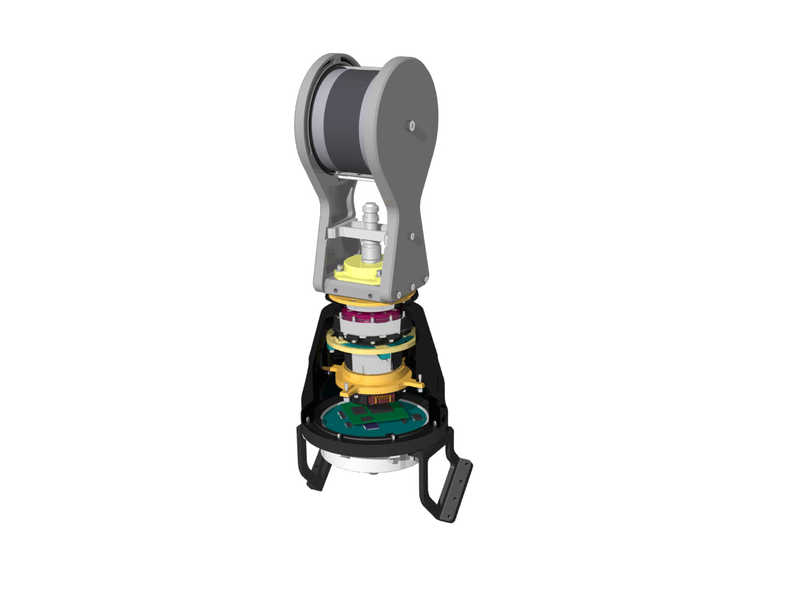

LAB SETUP · REVIEW 03 · 2026.09.13
PortA 실험실 연결도
센서와 PC만 가동한 실험실에서, 약 3일 정상 동작 후 발생한 간헐적 PortA 오류. 두 전원 경로와 20 m 통신선, 센서 내부 구조를 함께 놓고 실제 구성과 대조합니다.
Ethernet 두 쌍, +24 V끼리 한 쌍, 0 V끼리 한 쌍이 같은 20 m 케이블에 들어갑니다. 편조 실드는 양끝 미접속이며, 센서와 SMPS는 같은 철제 테이블 위에 있습니다. 거리·접촉면·코일 치수는 아직 미확정입니다. PCB는 ATLAS의 실제 설계 자료를 사용했습니다. 점선은 확인되지 않은 연결 또는 결합 후보이며, 계산된 전류 경로가 아닙니다.
01 / CONNECTION MAP
전원 · 통신 · 접지 연결 지도
부품을 누르면 오른쪽에 근거와 미확정 항목이 나타납니다. 작은 화면은 그림을 가로로 이동해 보세요. 선은 연결 종류를 나타내며 실제 배선 길이·공간 위치·전류 방향을 의미하지 않습니다.
02 / SPATIAL CONTEXT
실험실 배치와 센서 내부
PC는 책상 위, 센서와 SMPS는 같은 철제 테스트 테이블 위에 있습니다. 바닥의 20 m 복합 케이블은 SMPS 가까이에서 RJ45와 전원 네 선으로 갈라집니다. SMPS까지 전원선은 짧고, 그 분기에서 PC까지 상용 랜선이 길게 이어집니다. 두 아웃렛은 별개입니다. 테이블·기기 사이 거리와 분기선 길이는 아직 표시용입니다. 센서 내부는 ATLAS의 조립도 기반 형상과 PCB 부품 위치를 가져왔습니다.
배치 개념도 · 방·거리·코일 치수 미확정
3D 준비 중…
실물 사진이 아닌 구성 확인용 3D입니다. 부품 높이와 하네스는 근사이며, 전기적 접촉이 검증된 형상은 아닙니다.
이번 확인으로 정해진 네 꼬임쌍과 SMPS
| 꼬임쌍 | 두 선의 역할 | 확인된 연결 |
|---|---|---|
| Ethernet 1 / 2 | 각 신호쌍 유지 | SMPS 근처 RJ45 ↔ 20 m 케이블 ↔ 센서 M12 |
| 전원 3 | +24 V / +24 V | SMPS +V에서 나온 두 선 |
| 전원 4 | 0 V / 0 V | SMPS −V에서 나온 두 선 |
| 편조 실드 | 8선 바깥의 실드 | 분기 쪽과 M12 쪽 모두 미접속 |
쌍 번호는 설명용이며 실제 핀 번호나 케이블 단면 내 위치가 아닙니다. 3D 확대의 꼬임 피치·색·탈피 길이도 표시용입니다.
SMPS는 LRS-350-24이며 전원 코드의 L·N·PE 세 선이 연결돼 있습니다. 제조사 외형은 215 × 115 × 30 mm입니다. 제조사 자료의 FG↔외함 연속성과 현재 SMPS↔테이블의 미확인 접촉을 구분합니다. 출력 −V를 FG와 자동으로 묶지 않습니다. 데이터시트 · FG↔외함 시험자료
ATLAS의 원래 기구 그림과 대조


현재 보드 형상·부품 XY는 KiCad 유래 자료입니다. 외함·모터·슬립링과 부품의 높이는 자료를 따라 단순화했습니다. 원본 STEP 전체나 실제 접촉면을 복원한 모델은 아닙니다.
03 / REAL PCB GEOMETRY
실제 PCB에서 PortA 경로 보기
제조 Gerber 기반 구리·비아와 64핀 접점 근사를 그대로 가져왔습니다. PHY–T2와 T2–M12 구간을 나누어 확인합니다. 보드 분리는 표시 기능이고, 색은 전자기장 세기가 아닙니다.
결합 간격 15 mm
PCB 형상 준비 중…
GND 주변 표시는 신호 구리와 XY 거리 3 mm의 표시 필터입니다. 계산된 리턴 전류가 아닙니다. 보드 보기의 좌표축과 위아래 방향은 센서 조립 보기와 다릅니다.
가져온 PCB 모델의 범위와 누락된 부분
| 항목 | 자료에 있는 내용 | 다음 해석에서 확인할 것 |
|---|---|---|
| 제조 PCB | 두 4층 보드의 신호 구리·내층 기준면·도금홀 788개, GND로 분류된 568개 | 전체 전원망·소자 연결·소스 Gerber와 해석용 형상의 대조 |
| 층 구성 | 56 / 110 / 36 / 1130 / 36 / 110 / 56 µm, 합계 1.534 mm | 유전체 Dk·손실과 도체 손실. 기존 PEC/무손실 가정을 실물값과 구분 |
| Molex 64핀 | 결합 높이 15 mm, 직선 접점 0.205 × 0.30 mm 근사 | 실제 스프링·접점·하우징과 귀환 연결 |
| T2 · M12 · 보호부품 | 패드와 주변 PCB 일부 | 트랜스 내부·커넥터 몸체·TVS 등 실장 부하의 전기 모델 |
| 기존 계산 | 케이블측 FEM 100 MHz, PHY측 초기 openEMS | 새 EMC 결과가 아닙니다. 전체 대역·공통모드·실제 종단은 별도 계산 |
기존 M12·CON1 핀맵 — 이번 하네스 확인 전
아래는 ATLAS 조립도에 기록된 기존 핀맵입니다. 이번 실험의 배선을 검증한 표가 아니며, M12와 PCB CON1 번호는 서로 다릅니다. TX/RX는 LAN9354 PortA 기준의 기록입니다.
| 기능 | 기존 외부 M12 | 기존 PCB CON1 | 이번 구성 |
|---|---|---|---|
| Ethernet TX 쌍 | 8 / 2 | 8 / 7 | 실제 극성·두 쌍·RJ45 매핑 확인 필요 |
| Ethernet RX 쌍 | 3 / 4 | 6 / 5 | 실제 극성·두 쌍·RJ45 매핑 확인 필요 |
| +24 V | 1 / 7 | 1 / 2 | 각 2선 사용 확인 · 핀 번호는 대조 전 |
| 0 V / GND | 5 / 6 | 3 / 4 | 각 2선 사용 확인 · 핀 번호는 대조 전 |
04 / BEFORE SOLVING
그림을 확인한 뒤 채울 모델 입력
먼저 연결이 맞는지 확인하고, 그다음 계산에 민감한 치수와 전기적 접속을 채웁니다. 항목을 누르면 연결 지도에서 해당 위치를 선택합니다.
openEMS에 가져가는 것과 별도로 모델링하는 것
| 범위 | 모델 방향 | 현재 상태 |
|---|---|---|
| PCB·커넥터 국부 형상 | 도체·유전체·패드·귀환 경로와 차동/공통모드 포트 | ATLAS 표시 형상 있음. 원본 대조, 실제 실장 소자와 격자 확인 필요 |
| 20 m 케이블·종단 | 실제 단면/쌍 구성·손실·실드/접지와 양끝 부하. 케이블 구간 모델과 국부 EM 모델 연결 검토 | 약 20 m·신호 4선 + 전원 4선·양끝 미접속 편조 실드 확인. 세부 구조 미확정 |
| 함체·장착·외부 귀환 | 재질·접합·기생 결합. 연결도에 없는 이상적인 PE 단락을 추가하지 않음 | 철제 테이블 위 센서·SMPS 확인. 실제 치수·접촉면·접지는 미확정 |
| 모터·SMPS·PC | 먼저 경계에서 전압/전류 또는 임피던스로 표현, 필요 구간만 정밀화 | 품번·운용 파형·주파수/크기 근거 필요 |
| LAN9354 내부 동작 | 아날로그 수신·DSP/등화·복구 동작은 수동 전자기장 해석과 구분 | 완전한 내부 모델 미확보. 파형 왜곡을 임의의 CRC 오류율로 환산하지 않음 |
openEMS의 FDTD 포트·재료·집중소자 기능을 사용할 수 있지만, 방 전체와 20 m 선로를 PCB의 미세 격자로 한 번에 채우는 것이 기본 계획은 아닙니다. 필요한 구간을 나누고 경계·모드·종단을 맞춰 연결합니다. 이 페이지의 3D가 곧 실행 가능한 solver mesh인 것은 아닙니다.